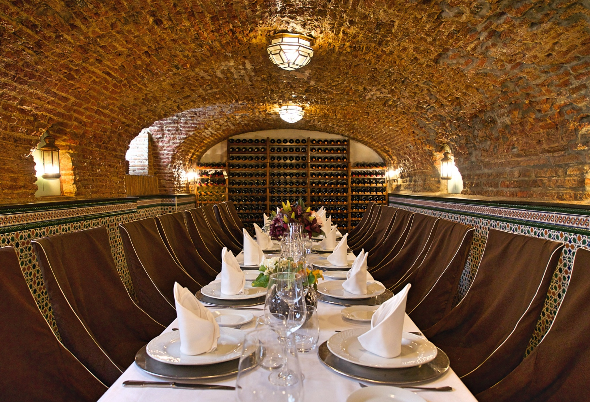

Nuestro local

Ven a visitarnos y disfruta de nuestros sabores caseros en un ambiente acogedor. ¡Te esperamos!
Ubicación
Calleja de las Flores, Córdoba
Bienvenidos a Sabores de Córdoba, somos un restaurante especializado en comida tradicional española, donde preparamos platos caseros con ingredientes de calidad para que disfrutes de una experiencia deliciosa.
Nuestro local

Ven a visitarnos y disfruta de nuestros sabores caseros en un ambiente acogedor. ¡Te esperamos!
Calleja de las Flores, Córdoba